name: title layout: true class: cover --- count: false .section-mark.center[ ## Model selection and cross-validation ### How far to trust a score, and how to choose <br /> Oscar Esteban <<code>oscar.esteban@hevs.ch</code>> <br /> EAD · Exploration avancée de données et intelligence décisionnelle · 16.10.2026 ] ??? This deck asks how far a single score can be trusted and how to choose among models without overfitting to the test data. The previous deck, *Evaluating a classifier*, presented ROC AUC and error costs measured on one test set. This deck shows that such a test set gives only one draw from a range of possible scores (slides 2 and 3), introduces cross-validation as the remedy (slides 4 to 7), and explains how to keep a final test honest when choosing among models (slides 8 and 9). A case from MRI quality control (slides 10 to 12) warns that standard k-fold folds can overstate performance when rows share a group. The hands-on sessions (slides 13 to 23) compare four algorithms on the credit data and apply them to a second dataset. The textbook reference is chapter 5, *Overfitting and Its Avoidance* (Provost & Fawcett, 2013, pp. 111 to 138). --- name: newsection layout: true .perma-sidebar[ <p class="rotate"> <a rel="license" href="http://creativecommons.org/licenses/by/4.0/"><img alt="Creative Commons License" style="border-width:0; height: 20px; padding-top: 6px;" src="https://i.creativecommons.org/l/by/4.0/88x31.png" /></a> <span style="padding-left: 10px; font-weight: 600;">Model selection and cross-validation (16.10.2026)</span> </p> ] --- class: vcenter # This deck: from one score to a trusted one .cards.steps[ .card[ .enum[1] <span class="part">A score depends on its test rows.</span> Draw another test set, get another score. Slides 2 and 3. ] .card[ .enum[2] <span class="part">Cross-validation.</span> Every row takes a turn in the test: k-fold, and how Dataiku reports it. Slides 4 to 7. ] .card[ .enum[3] <span class="part">Choosing without fooling yourself.</span> A test kept apart; nested cross-validation. Slides 8 and 9. ] .card[ .enum[4] <span class="part">When cross-validation promises too much.</span> Rows that come in groups: a lesson from MRI scanners. Slides 10 to 12. ] .card[ .enum[5] <span class="part">Five folds, four algorithms, a second dataset.</span> Hands-on on the credits; linear models, SVM, forests, boosting; card defaults. Slides 13 to 23. ] ] ??? The five parts trace the path from a single, unreliable score to a comparison of algorithms on a second dataset. Part 1 (slides 2 and 3) demonstrates that the same model scored on different test sets yields different numbers, driven only by the draw. Part 2 (slides 4 to 7) defines cross-validation and shows how Dataiku reports it. Part 3 (slides 8 and 9) separates choosing from testing: the folds guide the choice, a held-out test gives the honest score, and nested cross-validation does both when data are scarce. Part 4 (slides 10 to 12) uses a published study on MRI scanners to show that rows from the same group are not independent and that folds must reflect how new data arrive. Part 5 (slides 13 to 23) runs the hands-on: five folds on the credits, four algorithms, a cost-aware threshold, then a second dataset of 30,000 records. --- class: stepwise-svg # How far can a score be trusted? <img class="phase-thumb" src="images/phase-mo.svg" alt="The CRISP-DM phases, modeling lit" /> .beside-thumb[ <div class="step-1"><object type="image/svg+xml" data="images/split-draws.svg" style="width: 94%; display: block; margin: 0.2em auto 0; pointer-events: none;"></object></div> .step-5.large.center[Same credits, same forest, five test sets drawn at random: five scores, from 0.75 to 0.84.] ] .admonition.question.step-6[ <i class="fa-solid fa-circle-question"></i> The score depends on which credits were drawn for the test. **How far can one such score be trusted?** ] ??? The animation builds five random 80/20 splits of the 1,000 credits (800 to learn, 200 to test), each time training the same random forest of 200 trees on all 20 attributes in scikit-learn. The five test AUCs are 0.799, 0.810, 0.750, 0.792 and 0.841, a range of about 0.09 driven entirely by which credits fell in the test set. No model parameter changed between the five runs. The closing question frames the deck: if one score can move this much by the draw alone, a single holdout estimate may land anywhere in that range. "Every dataset is a finite sample of a population" (Provost & Fawcett, 2013, p. 112, verbatim): the 1,000 credits are not all credits a bank will ever see, and a model that memorizes its training data instead of generalizing is useless on new cases (Provost & Fawcett, 2013, pp. 111 to 112). Slide 3 extends the experiment to 200 draws. --- # One split is one draw <img class="phase-thumb" src="images/phase-mo.svg" alt="The CRISP-DM phases, modeling lit" /> .beside-thumb[ <p>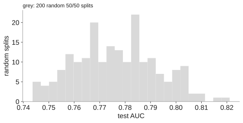</p> .large.center[200 test sets drawn at random from the same credits: the test AUC runs from 0.72 to 0.89, by the draw alone.] ] .admonition.question[ <i class="fa-solid fa-circle-question"></i> In Dataiku, **Design → Train/Test set** makes one such draw, with a random seed. What would happen if no seed were set? ] ??? The figure shows 200 random 80/20 splits of the same credits, each time training the same random forest and measuring the test AUC. The result runs from 0.72 to 0.89, a spread of about 0.17, caused only by which 200 credits were held out. Provost and Fawcett ask: "Should we have any confidence in a single estimate of model accuracy?" (Provost & Fawcett, 2013, p. 126, verbatim). The question at the bottom concerns Dataiku's Design, Train/Test set screen, which makes one such draw governed by a random seed. Without a seed, each retraining would draw other test rows: two training sessions would then differ by the split as well as by the model, and no score could be reproduced. On the course server (Dataiku DSS 15.0, 15 October 2026), the seed cannot be left empty: Dataiku always draws with a fixed seed, so each run is reproducible, and a different draw needs a different seed, with a score somewhere in the range the figure shows. Cross-validation, defined on slide 4, replaces one estimate with several and reports both their mean and their spread (Provost & Fawcett, 2013, p. 126). --- # Cross-validation: every row takes a turn <img class="phase-thumb" src="images/phase-mo.svg" alt="The CRISP-DM phases, modeling lit" /> .beside-thumb[ .lead[With 1,000 credits, no second dataset to wait for: how can a score stop depending on one test set?] <div class="trio"> <div><b class="k">The problem</b>One test set gives one score, and another test set another (slides 2 and 3).</div> <div><b class="k">The remedy</b><b>Cross-validation</b> splits the same rows again and again, so each row is tested once while the model learns from the others. Report the mean of the scores <b>and</b> their spread.</div> <div><b class="k">What stays</b>A final test, kept apart, still gives the number to report once a model is chosen (slide 8).</div> </div> ] .footnote[scikit-learn User Guide, 3.1 *Cross-validation: evaluating estimator performance*, BSD-3-Clause. .book[<i class="fa-solid fa-book-open"></i> Provost & Fawcett (2013), pp. 126 to 127.]] ??? The slide states the problem (one test set gives one score, another test set another), its remedy (cross-validation), and what stays (a final test for the chosen model). Cross-validation splits the same rows again and again so that each row is tested once while the model learns from the others, and it reports the mean of the scores and their spread. The scikit-learn User Guide argues that learning and testing on the same rows is a methodological mistake, that tuning settings against the test set leaks knowledge of it into the model, and that three fixed sets (training, validation, test) waste data and depend on one random split. With cross-validation the validation set is no longer needed, though a test set should still be held out for the final evaluation. Provost and Fawcett argue: "Cross-validation also makes better use of a limited dataset" (Provost & Fawcett, 2013, p. 126, verbatim), because every row serves both for training and for testing (Provost & Fawcett, 2013, pp. 126 to 127). Slide 5 describes k-fold, the most common way of splitting. --- # K-fold: five folds, each tested once <img class="phase-thumb" src="images/phase-mo.svg" alt="The CRISP-DM phases, modeling lit" /> .beside-thumb[ <object type="image/svg+xml" data="images/k-fold.svg" style="width: 84%; display: block; margin: 0 auto; pointer-events: none;"></object> <div class="duo"> <div><b>K-fold</b>: cut the rows into k parts, the <i>folds</i>. Each run tests one fold and learns from the k − 1 others: k runs, k scores.</div> <div><b>Stratified</b>: every fold keeps the 70/30 mix of the data, so no fold is short of bad credits. In Dataiku: <b>Design → Train/Test set</b>, <i>K-fold cross-test</i>, 5 folds, stratified.</div> </div> ] .footnote[.book[<i class="fa-solid fa-book-open"></i> Provost & Fawcett (2013), pp. 127 to 129.] Stratified folds: Dataiku DSS 13, *Prediction settings*; scikit-learn User Guide, 3.1.] ??? K-fold cross-validation cuts the rows into k equal parts, the folds. Provost and Fawcett note: "Typically, k will be five or ten" (Provost & Fawcett, 2013, p. 127, verbatim); on this deck and on the course server, k is five. Each fold is held out once for testing while the model trains on the k minus 1 others, producing k models and k scores. When the procedure is finished, every row has been tested exactly once (Provost & Fawcett, 2013, pp. 127 to 129). Stratified folds keep the class proportions of the whole dataset in every fold, here the 70/30 mix of good and bad credits. The motivation is classes that are rare: a fold that contains no positive cases would leave ROC AUC undefined. In Dataiku, the setting is called *K-fold cross-test* under Design, Train/Test set, where the number of folds and the stratified option are chosen. Slide 6 reads the resulting numbers. --- class: stepwise-svg # Five folds, five AUCs, one ± <img class="phase-thumb" src="images/phase-mo.svg" alt="The CRISP-DM phases, modeling lit" /> .beside-thumb[ <div class="pair left-wide"> <div class="step-1"><object type="image/svg+xml" data="images/results-capture.svg" style="width: 100%; pointer-events: none;"></object> <div class="marks1"> <div><b>1 ROC AUC</b>: the metric that ranks the models.</div> <div><b>2 0.702</b>: the mean of the five fold scores.</div> <div><b>3 ± 0.049</b>: twice their standard deviation.</div> </div></div> <div class="step-2"><p>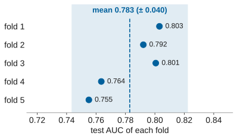</p> <p class="cap">Behind a ±: the five fold scores of the deck's forest, their mean, and twice their standard deviation (shaded).</p></div> </div> .step-3.large.center[The ± says how much the score moves from fold to fold. It is not a confidence interval.] ] .footnote[Left: screen capture, Dataiku DSS 15.0, course server, 14 October 2026, cropped; in this run Dataiku had left out five attributes it read as text. Right: a random forest on all 20 attributes (scikit-learn). The ±: Dataiku DSS 13, *Prediction settings*.] ??? Three elements are marked on the Dataiku Results screen on the left. ROC AUC is the metric that ranks the models. The score of 0.702 is the mean of the five fold scores for logistic regression, and the ± of 0.049 is twice their standard deviation (Dataiku, 2024, *Prediction settings*). In this run, Dataiku had left out five attributes it read as text, using only 16 of the 21 features. The right panel shows the deck's own random forest scored in scikit-learn on all 20 attributes: the five fold AUCs are 0.803, 0.792, 0.801, 0.764 and 0.755, with a mean of 0.783 and a ± of 0.040. The ± describes how much the score moves from fold to fold. It is not a confidence interval: the folds share most of their training data, so their errors are correlated and the spread understates the true uncertainty of the mean (Bengio & Grandvalet, 2004). Provost and Fawcett report cross-validated results as a mean and standard deviation, treating the spread as a description of variability (Provost & Fawcett, 2013, pp. 128 to 129). --- # Each fold repeats deck 2's evaluation <p>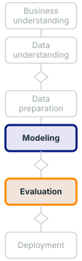</p> .beside-thumb[ .lead[Each fold scores the fifth of the credits it held out, exactly as deck 2 scored one test set: one curve per fold.] <div class="pair"> <div><p>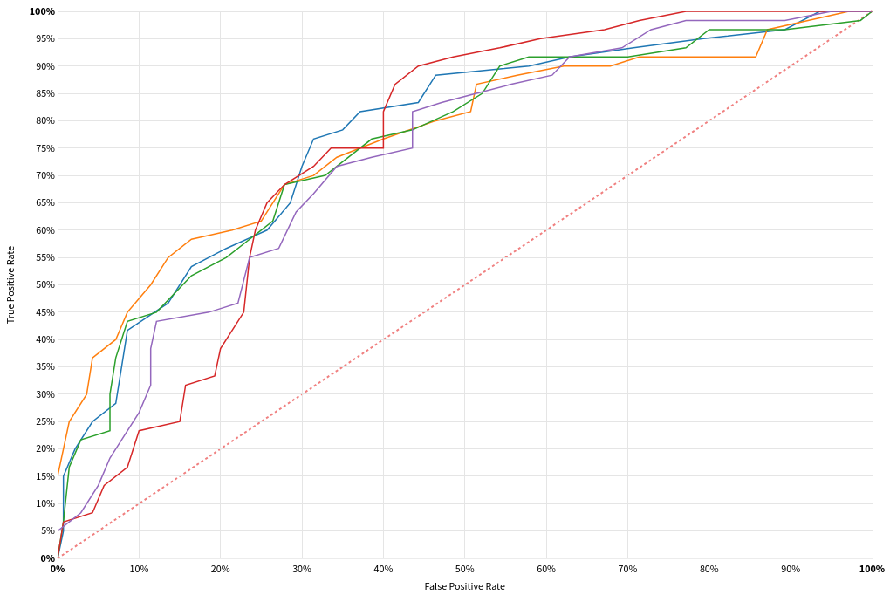</p> <p class="cap">ROC: AUC 0.756 (± 0.029).</p></div> <div><p>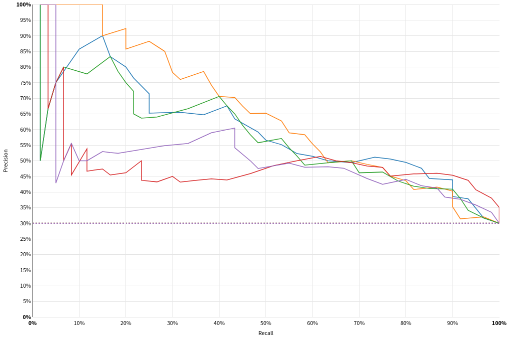</p> <p class="cap">Precision-recall (PR): average precision (AP) 0.571 (± 0.117). Dotted: 30%, the share of bad credits.</p></div> </div> ] .footnote[Screen captures: Dataiku DSS 15.0, course server, 15 October 2026; an XGBoost model, five folds; **Performance → ROC & PR curves**, cropped.] ??? Each of the five folds holds out one fifth of the credits and scores the model on those held-out rows, exactly as deck 2 scored a single test set. The screen captures show this for an XGBoost model trained on the course server (Dataiku DSS 15.0, 15 October 2026). On the left, the five ROC curves give an AUC of 0.756 (± 0.029): the curves agree at the corners and diverge in the middle, where a few credits more or less on one side of a cut-off move a fold's curve. On the right, the five precision-recall curves give an average precision of 0.571 (± 0.117). The dotted baseline at 30% marks the share of bad credits in the data: a random classifier would sit there. Slide 13 asks students to produce these per-fold curves themselves. --- class: stepwise-svg # Choose on the folds, then test once <img class="phase-thumb" src="images/phase-mo.svg" alt="The CRISP-DM phases, modeling lit" /> .beside-thumb[ <div class="step-1"><object type="image/svg+xml" data="images/test-kept-apart.svg" style="width: 96%; display: block; margin: 0 auto; pointer-events: none;"></object></div> <div class="duo"> <div class="step-2"><b>Hyperparameter</b>: a setting fixed before training, such as the number of trees. In Dataiku, <b>Design → Hyperparameters</b>.</div> <div class="step-3">Every choice made on the folds (algorithm, hyperparameters, threshold) flatters their score. The test kept apart gives the honest one.</div> </div> ] .footnote[.book[<i class="fa-solid fa-book-open"></i> Provost & Fawcett (2013), pp. 134 to 135.] Choosing among models is part of CRISP-DM's modeling: tasks 4.1 and 4.4 (P. Chapman et al., 2000).] ??? The diagram separates two levels: the folds, used to compare models and tune settings, and a test set kept apart for the final, honest score. A hyperparameter is a setting fixed before training, such as the number of trees in a random forest; in Dataiku it is set under Design, Hyperparameters. Every choice made on the folds (algorithm, hyperparameters, threshold) flatters the fold scores, because the best of several noisy scores looks better than the model will do on new rows (Provost & Fawcett, 2013, pp. 134 to 135). To get an honest figure, "test data should be strictly independent of model building" (Provost & Fawcett, 2013, p. 134, verbatim): a test set kept apart and used only once. Selecting the modelling technique is CRISP-DM's task 4.1; assessing the result is task 4.4, which ranks models and revises settings for the next run (Chapman et al., 2000, pp. 27 and 29). Slide 9 shows what to do when data are too few to set a test set aside. --- class: stepwise-svg # Nested cross-validation tests the choosing <img class="phase-thumb" src="images/phase-mo.svg" alt="The CRISP-DM phases, modeling lit" /> .beside-thumb[ .lead.step-1[Each fold gave its own score; a single test set kept apart is one draw again (slide 3). **Nested** cross-validation repeats the whole choosing inside each fold.] <div class="step-1"><object type="image/svg+xml" data="images/nested.svg" style="width: 100%; pointer-events: none;"></object></div> ] .footnote[.book[<i class="fa-solid fa-book-open"></i> Provost & Fawcett (2013), p. 135.] O. Esteban et al. (2017), *PLoS ONE* 12(9): e0184661, p. 11.] ??? The lead text restates the problem: each fold gave its own score, but a single test set kept apart is one draw again (slide 3). Nested cross-validation places the entire selection procedure inside each fold. An inner loop tries different models and hyperparameters on sub-folds of the training portion; the best choice from the inner loop is then evaluated on the outer fold. With five folds at both levels, thirty models are built in total (Provost & Fawcett, 2013, p. 135). Dataiku's documentation describes this same scheme: a k-fold hyperparameter search inside a k-fold cross-test, where the test set is never used during tuning (Dataiku, DSS 14, *Advanced models optimization*). In MRIQC, nested cross-validation uses an inner loop that selects the model and its hyperparameters and an outer loop that evaluates it (Esteban et al., 2017, p. 11). Slides 10 to 12 use that study to show what happens when the folds do not match how new data arrive. --- class: stepwise-svg # Rows from one site look alike <img class="phase-thumb" src="images/phase-ev.svg" alt="The CRISP-DM phases, evaluation lit" /> .beside-thumb[ <div class="figcard"> <div class="step-1"><p>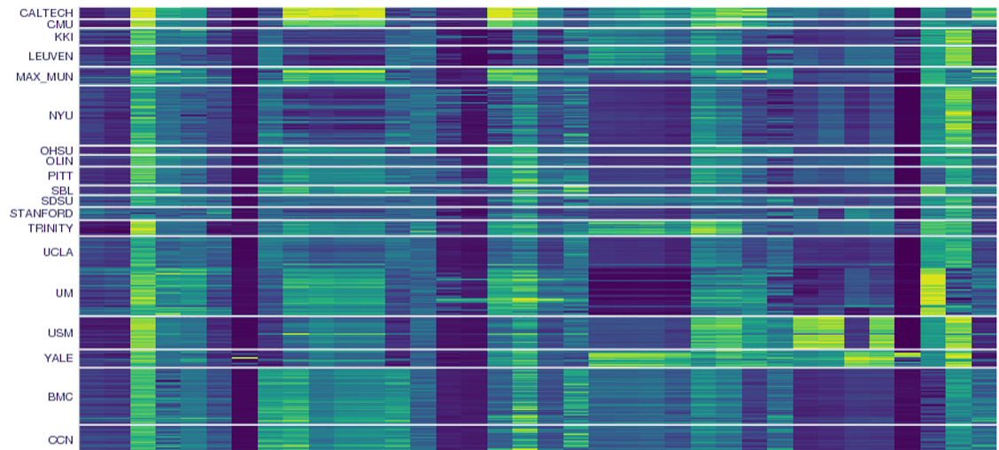</p> <p class="cap" style="font-size: 0.74em; margin: 0.2em 0 0;">One row per brain scan, grouped by site; one column per quality measure; colour: the measure's value.</p></div> <div class="card-box"> <p class="step-1">MRIQC predicts whether an MRI scan is good enough to use, from 1,101 scans taken at 17 sites. Each site's scanner leaves its mark on every measure.</p> <p class="step-2">Ordinary folds put scans of every site on both sides of the split: a model can learn to recognise the site, and its score rises.</p> <p class="step-3"><b>In business</b>: one customer in many rows, the branches of a bank, the months of a year. Rows of one group are not independent.</p> </div> </div> ] .footnote[Figure: O. Esteban et al. (2017), MRIQC, *PLoS ONE* 12(9): e0184661, Fig 3, left panel, cropped; CC BY 4.0.] ??? The figure is Fig 3 from MRIQC (Esteban et al., 2017, p. 4): one row per brain scan, grouped by the 17 sites in the ABIDE dataset (1,101 usable T1-weighted scans), with one column per image-quality measure. Each site's scanner leaves a pattern across all its scans, so the measures cluster by site, a batch effect. Ordinary k-fold cross-validation would put scans of every site on both sides of the split. A model could then learn to recognise the site rather than the image quality, and its score would rise. The slide draws an analogy to business data: one customer appearing in many rows, the branches of a bank, the months of a year. Rows that share a group are not independent, and a fold that mixes groups on both sides lets the model exploit that dependence rather than generalize. Slide 11 shows what happens when each site is held out in turn. --- # Each unseen site scores differently <img class="phase-thumb" src="images/phase-ev.svg" alt="The CRISP-DM phases, evaluation lit" /> .beside-thumb[ .lead[**Leave-one-site-out**: each run holds out one whole site and learns from the 16 others. Each bar is the AUC on a site the model never saw.] <p>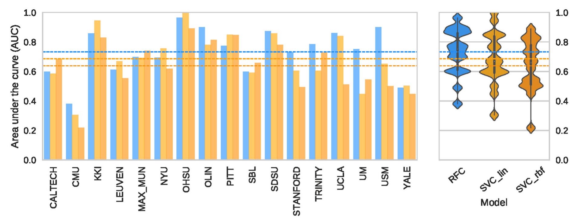</p> .lead[Blue: a random forest, from about 0.4 (CMU) to about 0.97 (OHSU), mean 0.73 ± 0.15. Orange: two SVMs. Dashed: each model's mean.] ] .footnote[Figure: O. Esteban et al. (2017), MRIQC, *PLoS ONE* 12(9): e0184661, Fig 6, top row, cropped; CC BY 4.0.] ??? The figure is Fig 6 from MRIQC (Esteban et al., 2017, p. 13): leave-one-site-out cross-validation, where each run holds out one whole site and trains on the other 16. Each bar is the AUC on a site the model never saw. The random forest (blue) ranges from about 0.4 at CMU to about 0.97 at OHSU, with a mean of 0.73 and a ± of 0.15. The two SVMs (orange) perform similarly on some sites and far worse on others. The wide variation shows that generalization to a new site is much harder than generalization to a new row from a known site. In the credit data, this would correspond to asking how a model trained on one bank's customers would score on another bank's. Slide 12 compares this leave-one-site-out result against standard 10-fold folds and against a held-out dataset of 265 scans from two new sites. --- class: stepwise-svg # Cross-validation can promise too much <img class="phase-thumb" src="images/phase-ev.svg" alt="The CRISP-DM phases, evaluation lit" /> .beside-thumb[ .lead.step-1[Nested cross-validation on the 17 sites, then the chosen model on 265 scans from two new sites:] .tbl.step-1[ | Folds: outer / inner | Cross-validated AUC | AUC on the new sites | Gap | |---|---|---|---| | 10-fold / 5-fold | 0.87 | 0.68 | **0.19** | | 10-fold / leave-one-site-out | 0.86 | 0.71 | **0.15** | | leave-one-site-out / 5-fold | 0.71 | 0.68 | **0.03** | | leave-one-site-out / leave-one-site-out | 0.71 | 0.68 | **0.03** | ] .lead.step-2[The model met the new sites at about 0.7 whatever the folds: only the promise changed.] ] .admonition.warning.step-3[ <i class="fa-solid fa-triangle-exclamation"></i> A good cross-validated score does not prove that the model works. **Split the way new data will arrive**: by site, by customer, by time. ] .footnote[O. Esteban et al. (2017), MRIQC, *PLoS ONE* 12(9): e0184661, Table 3, AUC columns; CC BY 4.0.] ??? The table is from MRIQC (Esteban et al., 2017, p. 12, Table 3). Four nested cross-validation experiments differ only in how the outer and inner loops split the data: standard 10-fold or leave-one-site-out. The model met the 265 scans of the held-out dataset (DS030, two new sites) at about AUC 0.68 to 0.71 regardless of the folds. What changed was the cross-validated estimate: 10-fold in the outer loop gave 0.87, a gap of 0.19 to the held-out score; leave-one-site-out gave 0.71, a gap of only 0.03. The warning follows: a good cross-validated score does not prove that the model works. The folds must mirror how new data will arrive. When new data come from new groups (sites, customers, months), the folds should hold out whole groups. Otherwise cross-validation measures the model's ability to recognise familiar groups, not its ability to generalize. --- # Hands-on 1, continued: five folds <img class="phase-thumb" src="images/phase-mo.svg" alt="The CRISP-DM phases, modeling lit" /> .beside-thumb[ .need[**The need.** The committee asks whether the best model is better, or only luckier with its test set.] <div class="moves"> <div><b>1. Switch</b><i>K-fold cross-test</i>, 5 folds, stratified.<br /><code>Design → Train/Test set</code></div> <div><b>2. Train</b>Two algorithms only: logistic regression and random forest.<br /><code>Design → Algorithms</code></div> <div><b>3. Compare</b>Each score and its ±; then one curve per fold: do they overlap?<br /><code>Performance → ROC & PR curves</code>, sheet panel 7</div> </div> .time[Groups of three, same roles. **15 minutes.**] ] ??? The committee's question is whether the best model from the previous hands-on is genuinely better, or only luckier with its test set. Groups switch to *K-fold cross-test* (five folds, stratified) under Design, Train/Test set, train logistic regression and random forest, and compare each score with its ±. The per-fold curves appear under Performance, ROC & PR curves (sheet panel 7): one ROC curve per fold, and students check whether the curves overlap. With cross-validation enabled, Dataiku's confusion matrix counts the first fold only (about 200 credits), while the metrics beside it are averages over all five folds. The session lasts 15 minutes. Slide 14 revisits the threshold trade-off from deck 2 as preparation for slide 15, which overlays fold bands on the decision chart. --- # Moving the threshold trades precision for recall <img class="phase-thumb" src="images/phase-mo.svg" alt="The CRISP-DM phases, modeling lit" /> .beside-thumb[ <img src="../02-model/images/threshold-tradeoff.svg" style="width: 80%; display: block; margin: 0.2em auto 0;" alt="Precision rises and recall falls as the threshold on P(bad) rises" /> .large.center[Deck 2, slide 10: one set of scores, one line per metric.] ] .footnote[The same scores as deck 2, slide 7, at every threshold from 0.02 to 0.98.] ??? This slide returns to deck 2, slide 10: the same set of scores, plotted at every threshold from 0.02 to 0.98, with one line for precision, one for recall, and one for F1. As the cut-off on P(bad) rises, fewer credits are flagged as bad, so precision rises while recall falls. The slide appears again here because the next slide (slide 15) adds the fold dimension: instead of a single line per metric, each line becomes a band whose width shows how far the metric moves from fold to fold. --- class: stepwise-svg # The same chart, with the folds' spread .fullw[ <div class="step-1"><object type="image/svg+xml" data="images/decision-chart.svg" style="width: 100%; margin-top: 0.4em; pointer-events: none;"></object></div> <div class="marks3"> <div class="step-1"><b>1</b> Precision, recall and F1 at every cut-off: the lines of the previous slide, here averaged over five folds.</div> <div class="step-2"><b>2</b> The <i>cost matrix gain</i>, minus the cost: highest at 0.17, the cut-off Dataiku picks from the costs of panel 5.</div> <div class="step-3"><b>3</b> The shaded bands: how far each line moves from fold to fold.</div> </div> .large.center.step-3[One test set gave one line per metric; five folds give a line and its band.] ] .footnote[Screen capture: Dataiku DSS 15.0, course server, 14 October 2026; a support vector machine, five folds, the costs of panel 5. **Performance → Decision chart**.] ??? The screen capture (Dataiku DSS 15.0, course server, 14 October 2026) shows a support vector machine scored with five folds and the cost matrix of panel 5, where granting a bad credit costs 5 and refusing a good one costs 1. Three elements are marked. First, precision, recall and F1 at every cut-off, averaged over the five folds: the same trade-off as slide 14, now an average rather than a single run. Second, the cost matrix gain, highest at the cut-off 0.17, the threshold Dataiku picks from those costs. Third, the shaded bands around each line, showing how much each metric moves from fold to fold. A wide band at the chosen cut-off means the gain is uncertain across subsets of the data; a narrow band means the folds agree. The bands are the visual equivalent of the ± reported on the Results screen (slide 6). --- # Four algorithms, four boundaries <img class="phase-thumb" src="images/phase-mo.svg" alt="The CRISP-DM phases, modeling lit" /> .beside-thumb[ .lead[On deck 2's two attributes, each algorithm shades where it would refuse a credit (P(bad) above 0.3):] <div class="models4"> <div><p>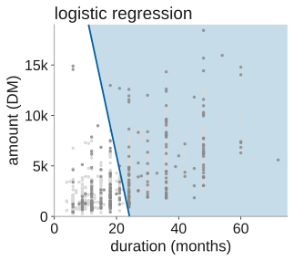</p><p class="cap">a straight line<br /><b>0.762</b> (± 0.023)</p></div> <div><p>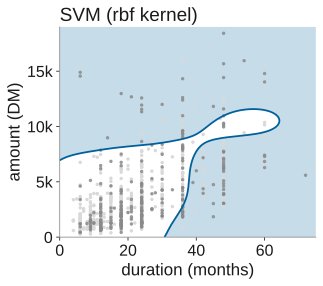</p><p class="cap">a smooth curve<br /><b>0.777</b> (± 0.041)</p></div> <div><p>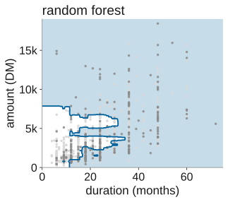</p><p class="cap">steps<br /><b>0.783</b> (± 0.040)</p></div> <div><p>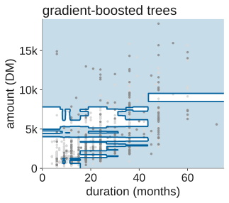</p><p class="cap">steps<br /><b>0.777</b> (± 0.039)</p></div> </div> .lead[On all 20 attributes and the same five folds (the AUCs above), they differ by at most 0.02, less than their ±.] ] .footnote[South German Credit, scikit-learn. Shapes: fitted on duration and amount only; the two tree ensembles with leaves of at least 25 credits, to keep the picture readable.] ??? Slides 13 to 15 established cross-validation on the credits with two algorithms. This slide adds the support vector machine and gradient-boosted trees, and compares all four boundaries on deck 2's two attributes, duration and amount. Each model shades where it would refuse a credit (P(bad) above 0.3). Logistic regression draws a straight boundary (AUC 0.762, ± 0.023). The SVM curves it smoothly (0.777, ± 0.041). The random forest and gradient-boosted trees cut in axis-aligned steps (0.783, ± 0.040 and 0.777, ± 0.039), because each tree in the ensemble splits one attribute at a time (Provost & Fawcett, 2013, p. 69). The two tree ensembles keep leaves of at least 25 credits so the pictures remain readable. On all 20 attributes and the same five stratified folds, the four algorithms differ by at most 0.02, less than any model's ±, so the ranking is not decisive. The next four slides describe each algorithm. --- # Linear models add up weighted attributes <img class="phase-thumb" src="images/phase-mo.svg" alt="The CRISP-DM phases, modeling lit" /> .beside-thumb[ .figtext[ <div></div> .txt[ - **Linear regression** predicts a number as a weighted sum of the attributes. **Logistic regression**, its form for classification, turns that sum into a probability (deck 2, slide 3). - Its boundary is a straight line; with more attributes, a flat plane. - It needs numbers on one scale: Dataiku rescales them and turns categories into dummy columns. - It reads directly: each weight says which way an attribute pushes, and how hard. .dss[In Dataiku: *Logistic Regression*.] ] ] ] .footnote[.book[<i class="fa-solid fa-book-open"></i> Provost & Fawcett (2013), pp. 85 and 97 to 98.] G. James et al. (2021), pp. 133 to 140.] ??? The previous slide showed four shapes of boundary. This one explains the first: logistic regression, the model deck 2 (slide 3) fitted on duration and amount. A linear classifier computes "a weighted sum of the attribute values" (Provost & Fawcett, 2013, p. 85, verbatim): each attribute receives a coefficient, and their total determines the predicted class. Logistic regression maps that total to a probability through the logistic function, which converts the weighted sum into a value between zero and one (Provost & Fawcett, 2013, pp. 97 to 98; James et al., 2021, pp. 133 to 140). With two attributes, the boundary is a straight line; with more, a flat plane. The model needs its inputs on one scale, so Dataiku rescales numeric attributes and turns categories into dummy columns by default. Unlike the other three algorithms, every weight is readable: it says which way an attribute pushes the score and by how much. In Dataiku, the algorithm is called Logistic Regression. --- class: stepwise-svg # An SVM keeps the widest margin <img class="phase-thumb" src="images/phase-mo.svg" alt="The CRISP-DM phases, modeling lit" /> .beside-thumb[ .figtext[ <div class="step-1"><object type="image/svg+xml" data="images/svm-margin.svg" style="width: 100%; pointer-events: none;"></object></div> .txt[ - A **support vector machine (SVM)** puts the boundary in the middle of the widest band free of points. - Only the points on the band's edges, the *support vectors*, fix it. .step-2[ - A *kernel* bends the band: Dataiku's default, rbf, gives the curve of slide 16. *C* sets how many points may sit inside the band. - Its training time grows fast with the rows: seconds for 1,000 credits, far longer for tens of thousands. ] .dss.step-2[In Dataiku: *SVM*; the run of 14 October used kernel rbf, C 1.0.] ] ] ] .footnote[.book[<i class="fa-solid fa-book-open"></i> Provost & Fawcett (2013), pp. 92 to 94.] G. James et al. (2021), pp. 367 to 383. The points are illustrative.] ??? The second algorithm is the support vector machine. Where logistic regression picks one boundary among many, an SVM picks the one with the widest margin, the band free of points between the two classes (Provost & Fawcett, 2013, p. 92). Only the points at the edges of the band, the support vectors, fix it. "The margin-maximizing boundary gives the maximal leeway for classifying such points" (Provost & Fawcett, 2013, p. 92, verbatim). When the data are not linearly separable, the algorithm seeks "some balance between a fat margin and a low total error penalty" (Provost & Fawcett, 2013, p. 93, verbatim). A kernel bends the band so that the boundary curves: Dataiku's default, rbf, gave the smooth shape on slide 16. The run of 14 October on the course server used kernel rbf, C 1.0 (Dataiku DSS 15.0); James et al. (2021, pp. 367 to 383) develop the method in full. Training time grows fast with the number of rows, which is why the second hands-on on slide 22 leaves this algorithm out. --- class: stepwise-svg # A forest averages many trees <img class="phase-thumb" src="images/phase-mo.svg" alt="The CRISP-DM phases, modeling lit" /> .beside-thumb[ <div class="step-1"><object type="image/svg+xml" data="images/tree.svg" style="width: 100%; pointer-events: none;"></object></div> <div class="duo"> <div class="step-1">A <b>decision tree</b> asks one question per node: the split that best separates bad from good credits. Its leaves give the share of bad.</div> <div class="step-2">A <b>random forest</b> averages many trees, each grown on a resample of the credits: steadier than any one of them. <i>Feature importance</i> (sheet, panel 3) comes from their questions.</div> </div> ] .footnote[The tree: depth 2, fitted to the 1,000 credits (scikit-learn). .book[<i class="fa-solid fa-book-open"></i> Provost & Fawcett (2013), pp. 62 to 72.] G. James et al. (2021), pp. 327 to 345.] ??? The third algorithm starts with the decision tree shown on the slide, a depth-2 tree fitted to all 1,000 credits. Its root asks whether the applicant's checking account holds 200 DM or more, or a salary for at least one year: the most informative single attribute. The split separates 394 applicants with that favorable status (12% bad) from 606 without it (42% bad). Lower nodes refine each group by duration or amount. Provost and Fawcett describe tree induction as "a recursive process of divide and conquer" (Provost & Fawcett, 2013, p. 67, verbatim), selecting the split that best separates the classes at each step (pp. 62 to 67). A single tree is fragile: fitted to another sample of the same data, it can come out quite different (James et al., 2021, p. 340). A random forest grows many trees, each on a bootstrap resample with a few columns drawn at random for each split, and averages their predictions (James et al., 2021, pp. 340 to 345). Feature importance, visible in Dataiku under Explainability, then Feature importance, records which attributes the forest relies on. --- # Boosting adds trees that fix errors <img class="phase-thumb" src="images/phase-mo.svg" alt="The CRISP-DM phases, modeling lit" /> .beside-thumb[ .figtext[ <div></div> .txt[ 1. A first small tree predicts. 2. The next tree learns from what the first got wrong; its answer is added, scaled down by the *learning rate*. 3. Again, a few hundred times, or until the score on held-out rows stops improving. **XGBoost** is a fast implementation of this *gradient boosting*. .dss[In Dataiku: *XGBoost*; the run of 14 October stopped at 17 trees of depth 3.] ] ] ] .footnote[G. James et al. (2021), pp. 345 to 348. The shape: scikit-learn's gradient-boosted trees, leaves of at least 25 credits.] ??? The fourth algorithm is gradient boosting, known in Dataiku as XGBoost. Unlike the forest, which grows its trees independently, boosting grows them one after another: the first tree predicts, the second learns from what the first got wrong, and each new tree's contribution is scaled down by a learning rate (James et al., 2021, pp. 345 to 348). The sequence stops when the score on held-out rows stops improving, or when a maximum number of trees is reached. The run of 14 October stopped at 17 trees of maximum depth 3. Because each tree is small, the ensemble often needs many of them, but each one specialises in what the previous ones missed (James et al., 2021, p. 347). The boundary on slide 16 shows steps, like the forest's, because each tree still splits one attribute at a time. --- # No algorithm wins everywhere <img class="phase-thumb" src="images/phase-mo.svg" alt="The CRISP-DM phases, modeling lit" /> .beside-thumb[ .tbl.compact[ | | Logistic regression | SVM | Random forest | Boosting (XGBoost) | |---|---|---|---|---| | Boundary | straight | smooth curve | steps | steps | | Preparation | rescale, dummies | rescale, dummies | little | little | | Explains itself | one weight per attribute | hardly | feature importance | feature importance | | Training on many rows | fast | slow | medium | fast | | AUC on the credits, 5 folds | 0.762 | 0.777 | 0.783 | 0.777 | ] .large.center[Compare them on the same folds, then test the chosen one once (slide 8).] ] .footnote[AUCs: scikit-learn on South German Credit, all 20 attributes, the same five folds; boosting by scikit-learn's gradient-boosted trees. G. James et al. (2021), p. 29.] ??? The table summarises the four algorithms: boundary shape, preparation needed, interpretability and AUC on the same five folds. The random forest leads at 0.783, but fold by fold, it beats the gradient-boosted trees on only three of the five folds, and the overall gap of 0.006 is smaller than either model's ±. James et al. state the principle directly: "no one method dominates all others over all possible data sets" (James et al., 2021, p. 29, verbatim). Which algorithm suits a problem depends on the shape of the data, the number of rows, and whether the model must explain itself to a decision-maker. Logistic regression reads directly through its weights; the forest and boosting offer feature importance instead; the SVM hardly explains itself at all. The lesson for the hands-on is to compare algorithms on the same folds, then test the chosen one once on a held-out set, as slide 8 described. --- # Hands-on 2: which algorithm for card defaults? <img class="phase-thumb" src="images/phase-mo.svg" alt="The CRISP-DM phases, modeling lit" /> .beside-thumb[ .need[**The need.** A card issuer wants to flag, each month, the clients likely to miss next month's payment. Which algorithm should score them? `credit_card_default.csv`: 30,000 credit-card clients in Taiwan, April to September 2005.] <div class="moves"> <div><b>1. Explore</b>Upload the file. Share of <code>default</code>? Are the <code>pay_status_*</code> columns numbers or categories (deck 1, slide 15)?<br /><code>+ Dataset → Upload your files</code>, <code>Explore</code></div> <div><b>2. Train</b>Target <code>default_next_month</code>; <i>K-fold cross-test</i>, 5 folds, stratified; logistic regression, random forest, XGBoost.<br /><code>Lab → AutoML Prediction</code>, <code>Design</code></div> <div><b>3. Compare</b>Each ROC AUC and its ±. Is the best one better on every fold?<br /><code>Results</code></div> </div> .time[Groups of three, same roles. 30 minutes with the next slide. SVM left out: its training time grows fast with the rows.] ] .footnote[Data: I.-C. Yeh and C.-H. Lien (2009); UCI Machine Learning Repository, dataset 350, doi:10.24432/C55S3H, CC BY 4.0; English names and labels by the course.] ??? The second hands-on moves to a larger dataset: 30,000 credit-card clients in Taiwan, published by Yeh and Lien (2009, Expert Systems with Applications, 36(2): 2473 to 2480) through the UCI Machine Learning Repository (dataset 350, doi:10.24432/C55S3H, CC BY 4.0). Of these, 6,636 (22.1%) defaulted on the next payment after September 2005. For each client, the file records credit limit, sex, education, marital status, age, the repayment status of each month from April to September 2005, the bill and the amount paid each month, all in NT dollars. The `pay_status_*` columns need attention: the UCI documentation gives -1 as paid duly and 1 to 9 as months of delay, but the codes -2 and 0 also appear and are undocumented; whether these columns are treated as numbers or categories (deck 1, slide 15) affects the model. The groups train logistic regression, random forest and XGBoost with K-fold cross-test, 5 folds, stratified, and compare each AUC and its ±. The SVM is left out because its training time grows fast with 30,000 rows. --- # Hands-on 2, continued: is the winner better? .beside-thumb[ <div class="moves"> <div><b>4. Overlap</b>For the two best models: do their fold curves overlap?<br /><code>Performance → ROC & PR curves</code></div> <div><b>5. Explain</b>Which columns lead? Would a credit officer accept them?<br /><code>Explainability → Feature importance</code></div> <div><b>6. Decide</b>The model you would deploy, and why: its score and ±, and how well it explains itself.</div> </div> .time[Debrief: each Referee gives the group's choice in one sentence. 5 minutes.] ] ??? The second part asks whether the leading algorithm truly leads, or only on some folds. For the two best models, the groups compare their ROC and precision-recall curves fold by fold under Performance, then ROC and PR curves: if the curves overlap, neither model reliably dominates. Under Explainability, then Feature importance, the groups check which columns the winning model relies on and whether a credit officer would accept them. The final move is a deployment choice: each Referee states the group's algorithm, its AUC and ±, and how well it explains itself. This step is about "connecting the results of mining data back to the goal of the undertaking" (Provost & Fawcett, 2013, p. 187, verbatim): a model that scores well but relies on attributes a decision-maker cannot defend is harder to put into production. --- # References .refs[ - Bengio, Y. and Grandvalet, Y. (2004). No unbiased estimator of the variance of K-fold cross-validation. *Journal of Machine Learning Research* 5:1089 to 1105. - Chapman, P. et al. (2000). *CRISP-DM 1.0: Step-by-step data mining guide*. SPSS. - Dataiku (2024). *Prediction settings*, Dataiku DSS 13 reference documentation. - Esteban, O., Birman, D., Schaer, M., Koyejo, O. O., Poldrack, R. A. and Gorgolewski, K. J. (2017). MRIQC: Advancing the automatic prediction of image quality in MRI from unseen sites. *PLoS ONE* 12(9): e0184661. doi:10.1371/journal.pone.0184661. CC BY 4.0. - Grömping, U. (2019). South German Credit Data: Correcting a Widely Used Data Set. Report 4/2019, Beuth Hochschule für Technik Berlin. Data: UCI Machine Learning Repository, dataset 573, doi:10.24432/C5QG88, CC BY 4.0. - James, G., Witten, D., Hastie, T. and Tibshirani, R. (2021). *An Introduction to Statistical Learning*, 2nd ed. Springer. - Provost, F. and Fawcett, T. (2013). *Data Science for Business*. O'Reilly. - scikit-learn developers. *User Guide*, 3.1 Cross-validation: evaluating estimator performance. scikit-learn.org, BSD-3-Clause. - Yeh, I.-C. and Lien, C.-H. (2009). The comparisons of data mining techniques for the predictive accuracy of probability of default of credit card clients. *Expert Systems with Applications* 36(2):2473 to 2480. Data: UCI Machine Learning Repository, dataset 350, doi:10.24432/C55S3H, CC BY 4.0. ] ??? This slide lists the sources behind the deck. Provost and Fawcett (2013) is the course textbook, cited by page throughout for classification, cross-validation and model selection. James et al. (2021) supplies the mathematical detail of each algorithm and the observation that no method dominates all data sets. Chapman et al. (2000) is the CRISP-DM process model, whose phases label the flowchart on each case slide. Grömping (2019) corrected the South German Credit data used for the four algorithms. Esteban et al. (2017) supplies the MRIQC case for grouped cross-validation (slides 10 to 12). Yeh and Lien (2009) published the credit card default data for the second hands-on. Bengio and Grandvalet (2004) shows that there is no unbiased estimator of the variance of K-fold cross-validation. Dataiku (2024) documents the prediction settings of DSS 13. The scikit-learn User Guide covers the cross-validation implementation. --- .section-mark[ # End .large[ Next: 16.10.2026 @ 15h00 (in <span class="timer" data-until="2026-10-16T15:00:00+02:00"></span>) [<i class="fa-solid fa-circle-left"></i>](../02-model/index.html) [<i class="fa-solid fa-home"></i>](#1) [<i class="fa-solid fa-circle-right"></i>](../04-multiclass/index.html) ] ] ??? The afternoon session continues at 15:00 with the next deck, which covers classification beyond two classes. The left arrow leads back to the previous deck, Evaluating a classifier. The house returns to this deck's first slide. The right arrow leads to the next deck.